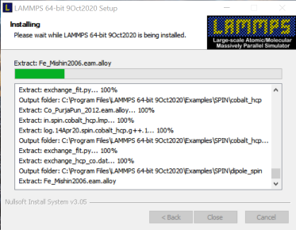
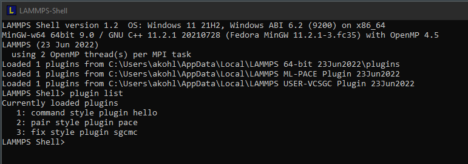

Back to LAMMPS Packages for Windows Overview

LAMMPS Windows Installer Repository
This repository is hosting pre-compiled Windows installers of the
LAMMPS
molecular dynamics simulation software package.
The binaries are built with MinGW64 Linux to Windows
cross-compilers on Fedora Linux using the standard LAMMPS sources.
The LAMMPS binaries contain all optional packages included in
the source distribution except:
- ADIOS (requires an external library),
- H5MD (requires an external library),
- INTEL (requires Intel compiler for better performance than OPENMP),
- KIM (not yet fully ported to Windows cross-compilation),
- ML-PACE (available as plugin),
- PLUMED (available as plugin),
- ML-QUIP (not fully ported to Windows),
- NETCDF (requires an external library),
- QMMM (only useful when linking to a QM software),
- RHEO (requires an external library)
- SCAFACOS (requires an external library).
- VTK (requires an external library).
The
serial executable additionally does
not contain the
LATBOLTZ
package, since it requires
MPI-IO functions, which are not available without linking
to a real MPI library.
Starting with the 17 February 2022 version of LAMMPS the KOKKOS
package with the serial and OpenMP backends enabled is
included. GPU support for Kokkos is currently not possible for
these packages due to compiling the binaries with a cross-compiler.
Starting with the 24 March 2022 version of LAMMPS the PLUGIN
package is included.
Starting with the 7 February 2024 version of LAMMPS the INTEL
package is no longer included. The performance benefit for the
package are small since the installer is not built with the
Intel compilers.
Starting with the 17 April 2024 version of LAMMPS the USER-REBOMOS
plugin installer is no longer created. The corresponding pair style
has been improved, documented, and added to the MANYBODY package of
the regular LAMMPS distribution.

Plugin Packages for Additional LAMMPS Packages
As of LAMMPS version 23 June 2022, we have started to provide
add-on installer packages that contain LAMMPS packages as
plugins. Those are separate packages because either their
source code is not part of the LAMMPS distribution or uses and
external library with licensing terms that prohibits linking the
package into the LAMMPS executable and library directly. There
are two variants of the plugin packages: one with support for
MPI and one without. The corresponding LAMMPS installer
packages have the PLUGIN package included and are set up to
automatically load such plugins immediately at runtime as shown
in the picture to the right.
The following packages are currently available as plugin installer packages:
The
LAMMPS Python module (to call LAMMPS from
Python) is included in
all packages in a way, that it
should work with a suitable Python installation of your own,
since a LAMMPS shared library (i.e. a DLL file on Windows) is
included.
The
PYTHON package (to call Python from LAMMPS)
however, is only included in the installer package with Python
in the name. Those packages also include a full Python runtime
environment with all standard Python modules and the NumPy
module since those have to be consistent with the Python library
used to compile LAMMPS. Please note that the 64-bit Windows
NumPy module is considered
very experimental and thus one
should expect crashes that are not bugs in LAMMPS.
Important Note on Microsoft Defender and Other Virus Scanners Reporting Trojans or Viruses
Sometimes virus scanners will report that the LAMMPS installer packages
contain a Trojan or Virus.
If you downloaded the installer from this website and get a match for the SHA-256 checksums, then
the report is most likely a false positive. This can happen with installer packages like the ones
provided here, since they are applications with interpreted byte code that triggers the false positive.
The installer packages are created with a cross-compiler on a protected Linux machine using authenticated
development tools, so it is close to impossible to produce infected packages.
If you come across such a case, please
report
the false positive to the antivirus vendor. You can usually then tell the virus scanner software to
ignore the virus report and execute or restore the installer package anyway and install LAMMPS. However,
we only recommend to do this, if you downloaded the package from the lammps.org domain and have
verified the checksum to make certain you have an unmodified file. We cannot prevent malicious people from
building LAMMPS installer packages that *do* contain malware, however unlikely it may seem.
Important Notes on Changes to the Installer Packages
Starting with the 2 August 2023 stable release, we have reduced
the number of compiled variants. All packages install at user
level. Microsoft MPI (MS-MPI) is the only supported MPI library.
As of LAMMPS version 17 February 2022, only 64-bit versions of the LAMMPS
installer packages will be built and provided. If you must have a 32-bit
version, you need to use an older version of LAMMPS or compile LAMMPS from
source. Compiling LAMMPS on Windows with Visual Studio 2022
(available
cost-free as Community Edition) is now fully supported.
As of LAMMPS version 27 May 2021, the LAMMPS installer packages will detect
if LAMMPS (version 27 May 2021 or later) has already been installed and will
offer to uninstall, in case it is. This should be independent from whether
it was 32-bit or 64-bit version and with or without MPI or Python. Having
multiple versions/variants of LAMMPS installed at the same time is no longer
supported. Also, the name of the LAMMPS executable has been simplified to
lmp.exe in all packages since there is no longer a need to
differentiate between the MPI and non-MPI version.
Some Notes on GPU Support
These Windows binaries include GPU acceleration via the
GPU package.
This is achieved through compiling the GPU package in OpenCL mode and linking
to an
OpenCL
compatible ICD loader. The included OpenCL loader library is compatible
with OpenCL version 1.2 to 3.0. This means the executables do not contain
any vendor provided code and should be compatible with current GPUs from
AMD,
Intel,
and
Nvidia.
You need to have an HD or UHD GPU in an 8th generation or later core
architecture Intel CPU for Intel GPU OpenCL support. Intel Xe type
GPUs are not supported since they support single precision only.
The GPU package has been compiled for mixed precision computation and
as of LAMMPS version 10 March 2021 will automatically tune itself for
the OpenCL capable hardware in use.
In the case of having multiple Vendor provided OpenCL runtimes
installed, you may run into the situation of the "wrong" runtime
being set as the default and used by LAMMPS. In this case, you may
need to remove unwanted vendors from the windows registry database. Look for the
key: HKEY_LOCAL_MACHINE\SOFTWARE\Khronos\OpenCL\Vendors,
and remove vendors with non-functional OpenCL support.
When reporting problems, please always include the exact
version of the installer and the output of the
ocl_get_devices tool.
LAMMPS Python module
These Windows binaries are built to include a shared library
(liblammps.dll) and and also contain the LAMMPS Python wrapper
module which is placed in a directory included in
the
PYTHONPATH environment variable. That makes it
possible to import it into a suitable Python interpreter on
Windows without any additional setup. This has been tested with
the Python interpreters bundled with
Microsoft Visual Studio
and those downloaded from
python.org but should be usable with any Python interpreter that
is for the same architecture (32-bit or 64-bit x86).
This module with the Python interface to LAMMPS is always included
and the packages with a Python runtime include may import the LAMMPS python module
from within their Python functions or classes. However, the LAMMPS installer packages
do not include a Python executable for standalone use.
LAMMPS GUI
Installer packages with GUI in the file name, include additionally the
LAMMPS GUI.
This is essentially a notepad like text editor for LAMMPS input files (with
syntax highlighting for LAMMPS input) that is linked to the LAMMPS library
so it can run LAMMPS inputs directly without a console window. The screen
output from the simulation is captured and shown in a separate log window.
After a run, it is also possible to create a snapshot image representing
the current state of the simulation.
Installing LAMMPS on Windows
As of LAMMPS version 2 August 2023, the directory structure has been simplified
and the number of package variants reduced.
The respective download directory will contain installer
packages that are labeled with the date of the LAMMPS version
and packages labeled as
latest or
stable. It is usually
recommended to download and install a
latest package to have the
latest features and functionality.
Installer packages for
add-on plugins are also provided and follow a similar naming scheme.
Download the installer executable suitable for your machine,
execute it, and follow the instructions in the dialogs.
Both kinds of packages contain:
- Either: a regular multi-threaded LAMMPS executable
called
lmp. This
should always work.
- Or: a multi-threaded LAMMPS executable that also
supports parallel execution via MPI message passing. This
executable is called
lmp and
requires installation of a suitable MS-MPI package to
work.
- the LAMMPS Shell
- the LAMMPS GUI, if indicated by the filename
- the LAMMPS manual in PDF format
- the colvars
reference manual in PDF format
- several additional PDF format guides for specific packages or styles
- the potential files bundled with the LAMMPS source code
- most of the example inputs, reference outputs and related files
- the benchmark inputs and reference outputs
- the tools
binary2txt, chain, msi2lmp, plumed, abf_integrate,
createatoms, ocl_get_devices, phana, stl_bin2txt
The executables will run in serial when executed directly.
Please see below for instructions on how to perform parallel runs.
MPI Support for LAMMPS on Windows
To use the MPI based parallelism in the provided installer packages, you also need to install
Microsoft MPI (MS-MPI) that can be downloaded from
the Microsoft home page.
You only need to download and execute the msmpisetup.exe installer. This contains
the runtime support. The additional download offered, msmpisdk.msi contains the
files required to compile LAMMPS with MPI and Visual C++ from source code.
If you would prefer to compile LAMMPS from source, you can follow the
instructions
in the LAMMPS manual for compiling LAMMPS with Visual Studio.
Older versions of LAMMPS binaries were compiled using a very old MPICH version from Argonne.
As of the 2 August 20233 version, this is no longer supported.
Running LAMMPS on Windows
General Comments
LAMMPS is a text mode program, so you have to click on the
Command Prompt entry in the windows start menu, launch the
Windows Power Shell, or simply execute the command
cmd from Start -> Run.
The LAMMPS manual and the colvars reference manual in PDF format
are linked from the start men, also references to open the
file system browser to view the Benchmarks and Examples
directory tree. The PATH environment variable is automatically
set by the installer, so that the bundled executables from everywhere
in the system. Also the LAMMPS_POTENTIALS environment variable
is preset to the folder with the bundled manybody potential files,
so they do not need to be copied into the respective working directory.
Serial Execution
To run a LAMMPS simulations please open a console window as outlined above
and change to the directory with your input script and then run
lmp as described in the LAMMPS
manual. For more details and additional command line flags, please
check out the
LAMMPS Manual.
Multi-threaded Parallel Execution
All LAMMPS binaries from this repository support multi-threading via OpenMP,
however by default only one thread is enabled. To enable more threads, e.g. four,
you need to either set it at the command line prompt via
set OMP_NUM_THREADS=4, via the
-pk omp 4 command line flag, or via the
package omp 4
command in your input script.
After enabling the use of multiple threads, you also have to select
styles in LAMMPS, that are multi-thread enabled. Those are usually identified
by the /omp suffix. Those can be selected explicitly and selectively,
or with the
suffix
command or - most conveniently - via using the -sf omp
command line flag to the LAMMPS executable.
Example: lmp -pk omp 4 -sf omp -in in.melt
Message Passing (MPI) Parallel Execution
Only the executable from the LAMMPS-MPI packages supports parallel execution
via MPI (which can be combined with OpenMP multi-threading). For that you also
need to install MS-MPI from Microsoft linked above.
MPI parallel executables have to be launched
with mpiexec -n # lmp ...
or mpiexec -np # lmp ... with "#"
being then number of parallel processes to start.
Known Issues: while running in MPI parallel mode any
output to the screen is block buffered and not line buffered as
usual. That is, output will not show up immediately, but only
after a certain amount of output has accumulated. This is done for
efficiency reasons. Multi-threaded parallel or serial runs are
not affected. Also when running under mpiexec, you should not use
multi-threading, since MPICH restricts processes to a single
physical CPU thus it will run less efficient.
Last modified: Fri Jun 28 00:22:02 UTC 2024 by akohlmey


{kind=link}
{kind=link}